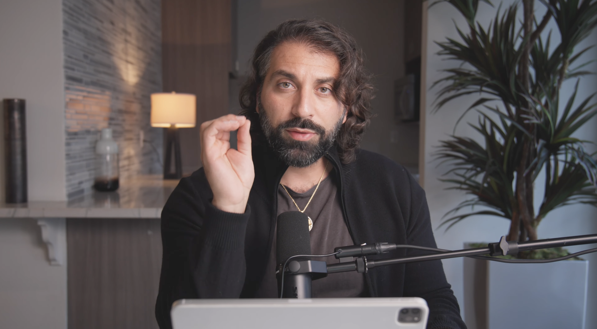
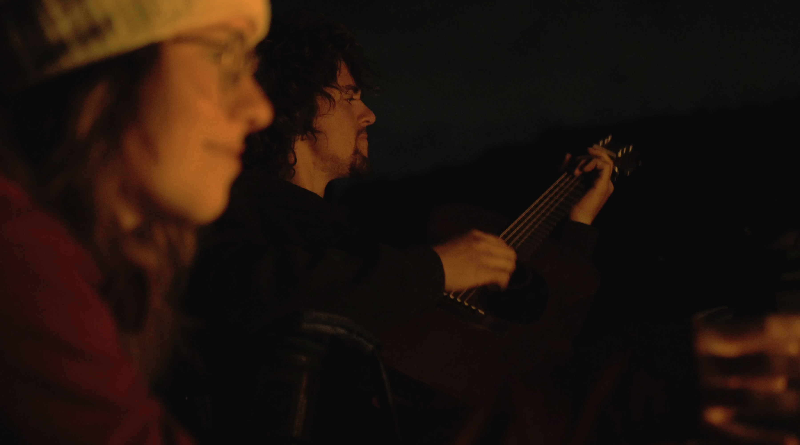
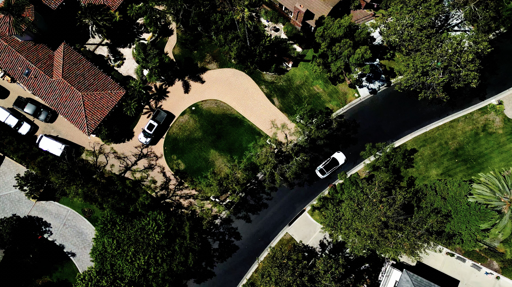
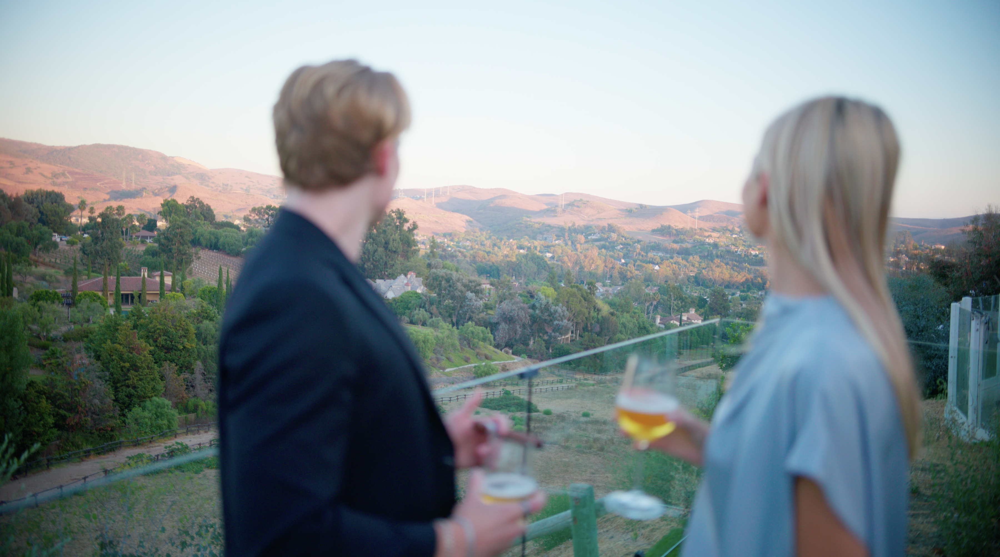
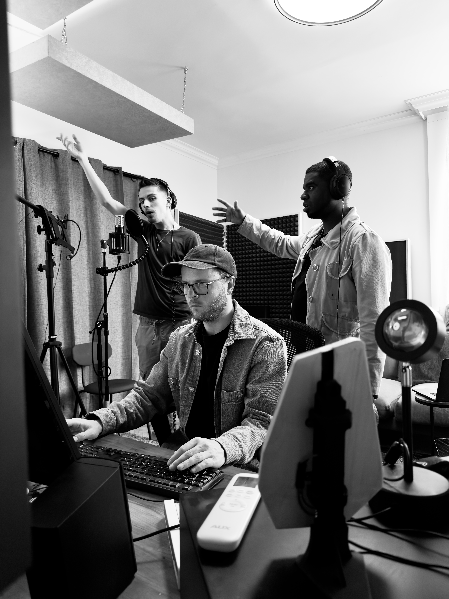

Documentary / Film
Story
Documentary, interviews, profiles, and films where the subject needs more than promotional coverage.
Photography / Film / Direction
Built to the assignment
Built to the assignment
The assignment
Give the viewer enough specificity to care.
When the subject carries real weight, the camera should not flatten it into generic promotion. Story work depends on observation, interview, environment, pacing, and the restraint to let the right moments survive the edit.


Direction
Every frame should add information. Change the distance, energy, light, or point of view rather than making five versions of the same picture.



Documentary / Film